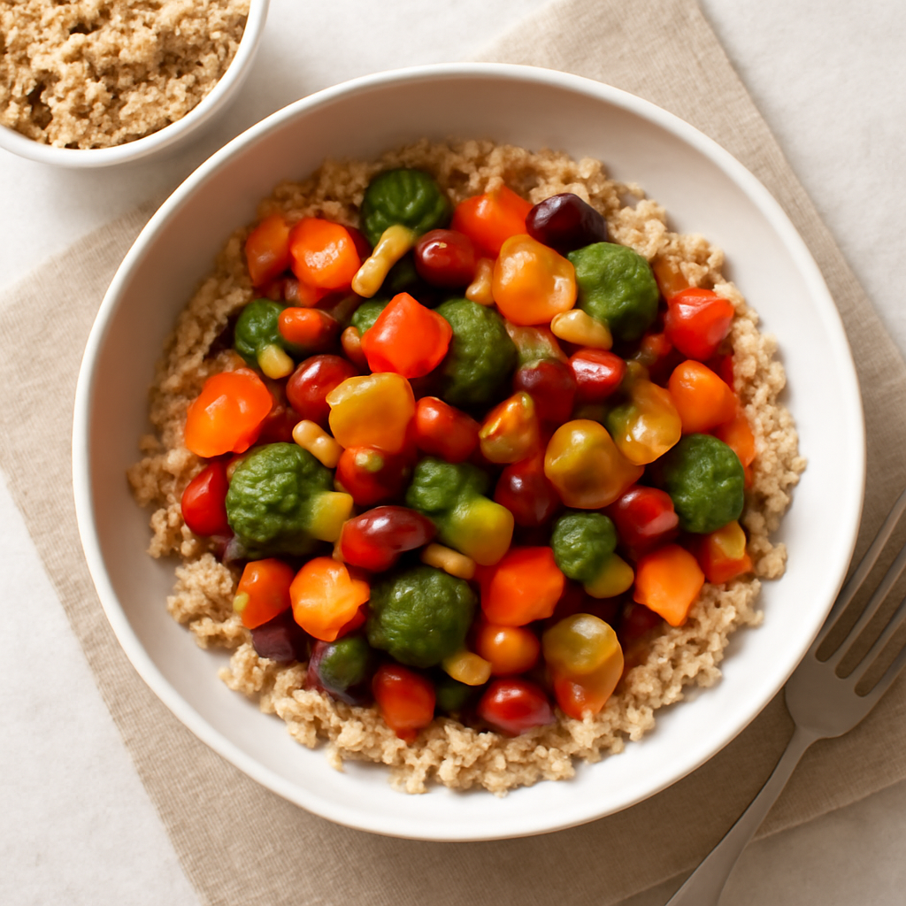

Friday — Vegetable & Bean Stir-Fry with Quinoa

Cook Time: 30 minutes
Method: Pressure Cooker
veganquickstir-fry
Ingredients for 6
- 2 cups mixed vegetables (frozen or fresh)
- 1 can kidney beans, drained and rinsed
- 1 cup cooked quinoa
- 2 cloves garlic, minced
- Soy sauce to taste
- 1 teaspoon sesame oil
Instructions
- In pressure cooker, sauté garlic until fragrant.
- Add mixed vegetables and kidney beans; stir-fry for 10 minutes, adding soy sauce and sesame oil.
- Serve over quinoa.
Toddler Notes
- Ensure vegetables are soft and cut into small manageable pieces.
- Quinoa should be fluffy and easy to chew.
← Back to weekly plan